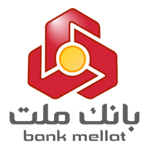

بهپرداخت ملت · REST + SOAP
Part of Vesta Gateway (vesta_payment)
این ماژول روی هستهی امن درگاه وستا ساخته شده است: آدرس بازگشت امضاشده، تأیید سرور به سرور، جلوگیری از دوبار مصرف رسید، قفل تراکنش، تلاش دوبارهی خودکار، داشبورد روشن و خاموش کردن بانک و حالت آزمایشی روی banktest.ir.